Pepsi Ramazon «Махалля» — кит для Seedance 2.5 · v2
Версия под комменты заказчика: много коротких кадров, жёсткие склейки по биту, толпа как в презе, кадры опираются на картинки презы, соседи дарят друг другу Pepsi, ребята играют руками.
Скачать всё одним архивомМонтаж (по мастеру master_door)
| Время, с | Клип | Звук |
|---|---|---|
| 0,00–9,95 | 1 · Ифтар (6 кадров) | строки 1–2 за дверью |
| 9,95–16,95 | 2 · Дверь (7 кадров) | пауза-жесты, строки 3–4 |
| 16,95–26,82 | 3 · Дроп и код (10 кадров) + перебивки из 7 | дробь, дроп, куплет 2 |
| 26,82–34,74 | 4 · Призы и Kia (8 кадров) | куплет 3 |
| 34,74–39,05 | 5 · Финал (5 кадров) | Op chiqing, удар на 39,05 |
| 39,05–44 | 6 · Стол + пэкшот | хвост удара, шумы |
Склейки внутри клипов уже стоят на долях. В монтаже режь ещё мельче и вставляй перебивки из клипа 7: у него тот же аудио-реф, что у клипа 3, поэтому руки и рты попадают в бит. Звук Seedance глушим, кладём мастер.
Аудио
- master_door.mp3
Мастер для монтажа: строки 1–2 «за дверью» + пауза 3 с (40,7 с) - master_door.wav
То же в WAV - master_pause.mp3
Мастер без фильтра двери - audio_C2_door.mp3
Аудио-реф клипа 2 (7 с) - audio_C3a_street.mp3
Аудио-реф клипов 3 и 7 (10 с) - audio_C3b_prizes.mp3
Аудио-реф клипа 4 (8 с) - audio_C4_final.mp3
Аудио-реф клипа 5 (6 с)
Референсы
R — персонажи и предметы, D — кадры из презы (на них опираются кадры клипов).

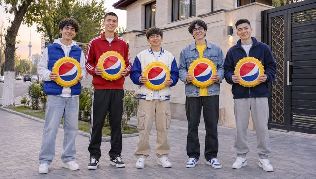
R01_bandРебята (5 шт., 18 лет)

R02_neighboursХозяин, семья, соседи

R03_locationМахалля

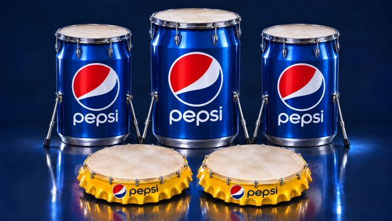
R04_drums_doirasБарабаны и дойры, без палочек

R05_pepsi_capБутылка и крышка с кодом

R06_paynet_codePaynet: ввод кода

R07_paynet_winPaynet: +100 000

R08_kia_podiumKia на подиуме с бантом

D01_iftarПреза: ифтар

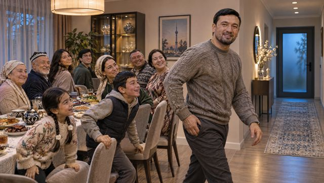
D02_hallwayПреза: хозяин идёт к двери

D03_doorПреза: у двери

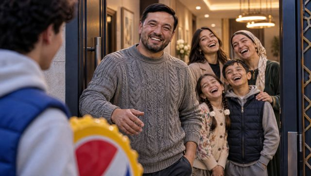
D04_smileПреза: хозяин улыбается

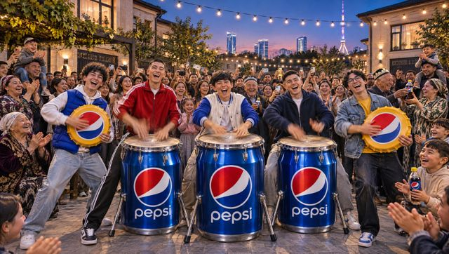
D05_handdrumsНовый: игра руками + толпа

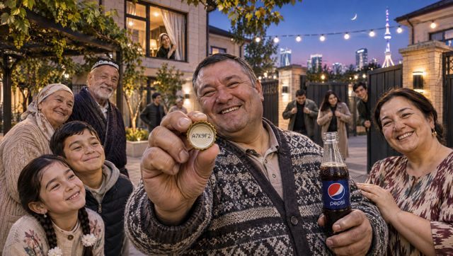
D06_capcodeПреза: крышка с кодом

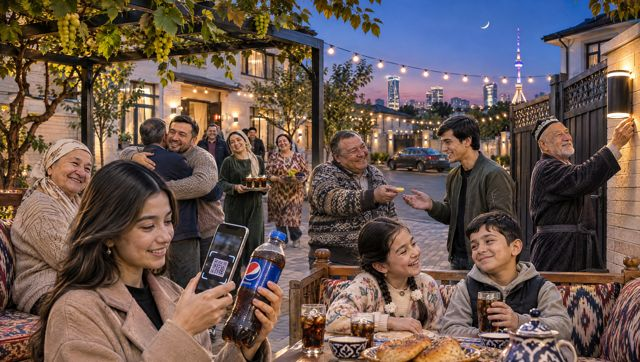
D07_qrПреза: QR и соседи

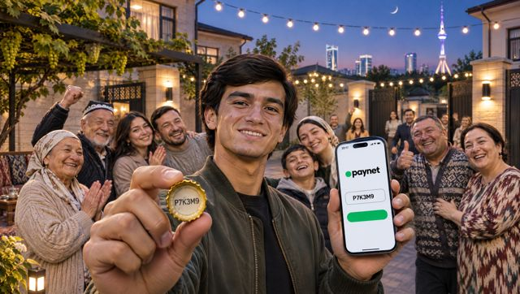
D08_paynetПреза: ввод в Paynet

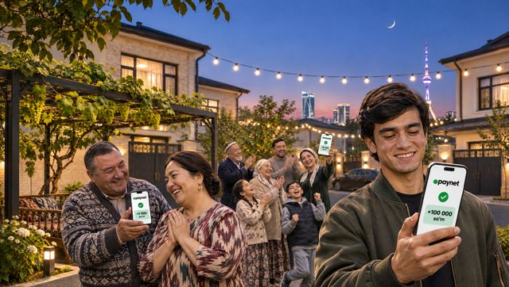
D09_winsПреза: выигрыши

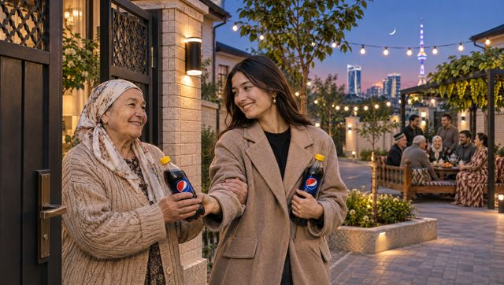
D10_giftПреза: девушка дарит бабушке

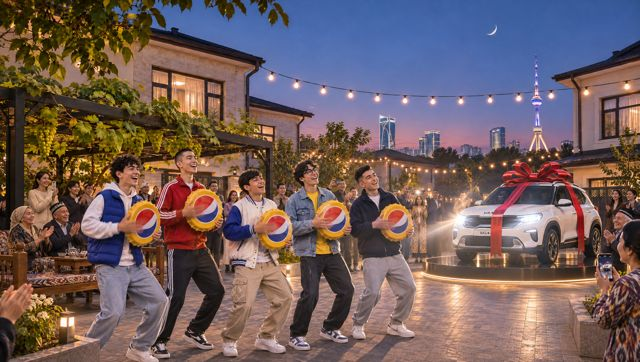
D11_kiaПреза: Kia за ребятами

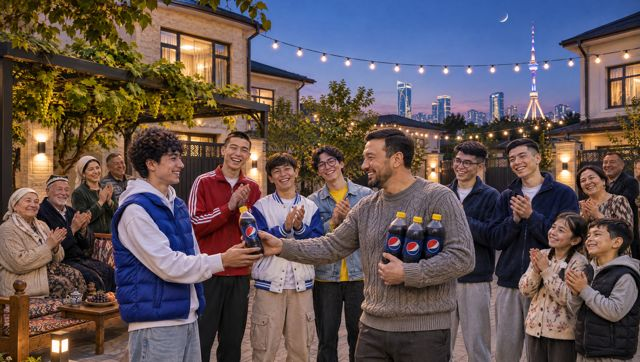
D12_handoverПреза: хозяин дарит Pepsi

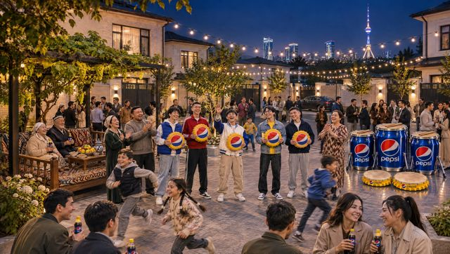
D13_yardПреза: полный двор

D14_tableПреза: финальный стол
Клипы и промпты
Клип 1 · Ифтар · 10 с
- Seedance 2.5 · Omni Reference · 16:9 · 10 с · звук вкл · без старт-кадра
- @image1 = D01_iftar · @image2 = D02_hallway · @image3 = R02_neighbours
- Аудио-реф: нет (песню кладём в монтаже)
Клип 2 · Дверь: «не-не-не» + строки 3–4 · 7 с
- Seedance 2.5 · Omni Reference · 16:9 · 7 с · звук вкл · без старт-кадра
- @image1 = D03_door · @image2 = D04_smile · @image3 = R01_band · @image4 = R05_pepsi_cap
- @audio1 = audio_C2_door.mp3
Клип 3 · Дроп и код · 10 с
- Seedance 2.5 · Omni Reference · 16:9 · 10 с · звук вкл · без старт-кадра
- @image1 = R01_band · @image2 = D05_handdrums · @image3 = D06_capcode · @image4 = D07_qr
- @image5 = D08_paynet · @image6 = R06_paynet_code · @image7 = R04_drums_doiras
- @audio1 = audio_C3a_street.mp3
Клип 4 · Призы и Kia · 8 с
- Seedance 2.5 · Omni Reference · 16:9 · 8 с · звук вкл · без старт-кадра
- @image1 = D09_wins · @image2 = R07_paynet_win · @image3 = D10_gift · @image4 = D11_kia
- @image5 = R08_kia_podium · @image6 = D05_handdrums · @image7 = R01_band
- @audio1 = audio_C3b_prizes.mp3
Клип 5 · Финал: Pepsi по кругу · 6 с
- Seedance 2.5 · Omni Reference · 16:9 · 6 с · звук вкл · без старт-кадра
- @image1 = D12_handover · @image2 = D13_yard · @image3 = R01_band · @image4 = R02_neighbours
- @audio1 = audio_C4_final.mp3
Клип 6 · Финальный кадр: стол · 5 с
- Seedance 2.5 · Omni Reference · 16:9 · 5 с · звук вкл
- Старт-кадр: D14_table
- Без рефов и без аудио-рефа
Клип 7 · Перебивки: ребята играют (для монтажа) · 10 с
- Seedance 2.5 · Omni Reference · 16:9 · 10 с · звук вкл · без старт-кадра
- @image1 = R01_band · @image2 = D05_handdrums · @image3 = R04_drums_doiras · @image4 = D13_yard
- @audio1 = audio_C3a_street.mp3 (тот же, что у клипа 3: кадры встают в монтаже синхронно)
Порядок
- Сначала черновики 480p (draft), удачные финалим в 1080p.
- Если Seedance склеивает меньше кадров, чем написано, не страшно: в монтаже режем дальше и добавляем перебивки из клипа 7.
- Если реф-картинку вклеивает целиком как кадр, убери из клипа один-два D-рефа, содержание кадра останется в тексте.